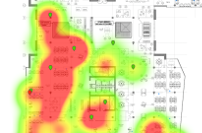
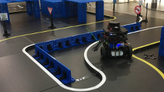
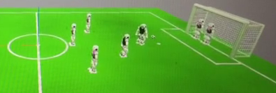

Le informazioni generali relative al corso di Laboratorio Ciberfisico (coord. Prof. Andrea Calanca) si trovano qui
In questa pagina è possibile trovare il materiale relativo al modulo di Robot Programming with ROS
Obiettivi:
Gli argomenti trattati nel corso riguardano la programmazione di sistemi ciberfisici complessi quali i sistemi robotici e includono tematiche legate alla percezione, alla navigazione, alla pianificazione e al controllo.
Il corso intende formare la figura dello sviluppatore robotico mediante un approccio sia teorico che pratico il quale include esperienza diretta su hardware e software. Lo sviluppatore robotico deve saper programmare sia a basso livello (embedded) che ad alto livello, conoscere il sistema operativo Robot Operating System (ROS) ed i framework di percezione quali Open Source Computer Vision (OpenCV) e Point Cloud Library (PCL). Inoltre, lo sviluppatore robotico saper progettare algoritmi in grado di controllare i sistemi fisici che compongono il robot stesso e l’ambiente con il quale interagisce.
Esame:
Il voto finale viene conseguito svolgendo:
Importante: È previsto un solo progetto per l'intero corso da 6 CFU, da svolgersi o su argomenti relativi al modulo di Robot Programming o sul modulo del Prof. Andrea Calanca.
Periodo:
II semestre (marzo 2018 – giugno 2018)
Orario di Lezione:
Martedì e mercoledì dalle dalle 8:30 alle 10:30 presso il Laboratorio Ciberfisico
Esercitazioni pratiche:
Martedì e mercoledì dalle dalle 10:30 alle 12:30 presso il Laboratorio Ciberfisico
Ricevimento:
Si invitano gli studenti a controllare regolarmente la bacheca degli avvisi
Per il programma completo fare riferimento al diario delle lezioni
Tutorial di ROS:
Libro di testo:
Il corso non prevede un libro di testo. Gli studenti che vogliano approfondire i concetti trattati a lezione possono utilizzare l'elenco di libri su ROS disponibile quiSlide:
Documentazione e codice Turtlebot3:
Si invitano gli studenti a leggere con attenzione le regole degli homework.
Ogni homework ha una data di consegna consigliata, che non è vincolante e serve come suggerimento per l'organizzazione temporale del lavoro.
testo suggerimenti
La data di consegna consigliata è fisssata al 15 aprile 2018
testo
La data di consegna consigliata è fisssata al 21 maggio 2018
testo
La data di consegna consigliata è fisssata all'11 giugno 2018
Modalità di consegna: Inviare una email al docente contenente in oggetto "[homework X]" X ∈ {1,2,3}, inserendo nel testo dell'email nome, cognome, matricola, corso di laurea, repository Git contenente il codice. Inoltre, indicare se si vuole che il link al repository Git venga pubblicato o meno sul sito del corso.
Nel caso di lavori di gruppo, inviare una unica email contenente i riferimenti per tutti i membri del gruppo.
Per dubbi relativi agli homework contattare il docente per email.
La lista degli homework consegnati può essere visionata qui



Nota: è possibile concordare
con il docente progetti diversi da quelli
riportati sopra
| Data | Argomenti trattati | Download |
|
13/03/2018 Lezione 1 |
Lezione di presentazione • Robot mobili • See-think-act cycle • Robot sociali |
|
|
14/03/2018 Lezione 2 |
ROS intro • nodi • topic e messaggi • installazione di ROS • turtlesim |
|
|
20/03/2018 Lezione 3 |
Git+ROS • git commit • git push • git merge • package hello_ros |
GIT two words introduction by Maurilio Di Cicco |
|
27/03/2018 Lezione 4 |
Uber's accident ROS Launch files • univr_turtle |
|
|
28/03/2018 Lezione 5 |
Robot mobili su ruote • manipolatori vs robot mobili • modello del robot mobile • Turtlebot 3 |
|
|
02/05/2018 Lezione 6 |
Simulatori ROS • Gazebo |
|
|
08/05/2018 Lezione 7 |
Navigazione in ROS • Mappe • introduzione a SLAM • virtual SLAM and navigation |
libro ROS Robot Programming di YoonSeok Pyo, HanCheol Cho, RyuWoon Jung, TaeHoon Lim copia locale del libro |
|
09/05/2018 Lezione 8 |
Getting started Turtlebot3 • teleoperazione robot reale • RViz robot reale |
|
|
15/05/2018 Lezione 9 |
Esercitazione Pratica • rosbag • virtual SLAM with saved rosbag |
|
|
16/05/2018 Lezione 10 |
Esercitazione Pratica • rosbag con robot reale |
|
|
22/05/2018 Lezione 11 |
OpenCV • ORB-SLAM |
Si ringrazia il dott. Stefano Aldegheri |
|
23/05/2018 Lezione 12 |
Esercitazione Pratica |
|
|
29/05/2018 Lezione 13 |
Gestione dati 3D • Point Cloud Library |
Si ringrazia il Prof. Alberto Pretto |
|
30/05/2018 Lezione 14 |
Esercitazione Pratica • Installazione libreria ORB-SLAM2 • Discussione Homework 3 • Discussione progetti finali |
|
|
05/06/2018 Lezione 15 |
Azioni in ROS • Goal per la navigazione |
|
|
06/06/2018 Lezione 16 |
Azioni basate su detection • Esempio red ball (turtlebot3_visual_goals) • Esempio autorace simulation |
Turtlebot3 autorace simulation Fork del repo originale Turtlebot3 autorace simulation realizzato da Fabio Falezza |